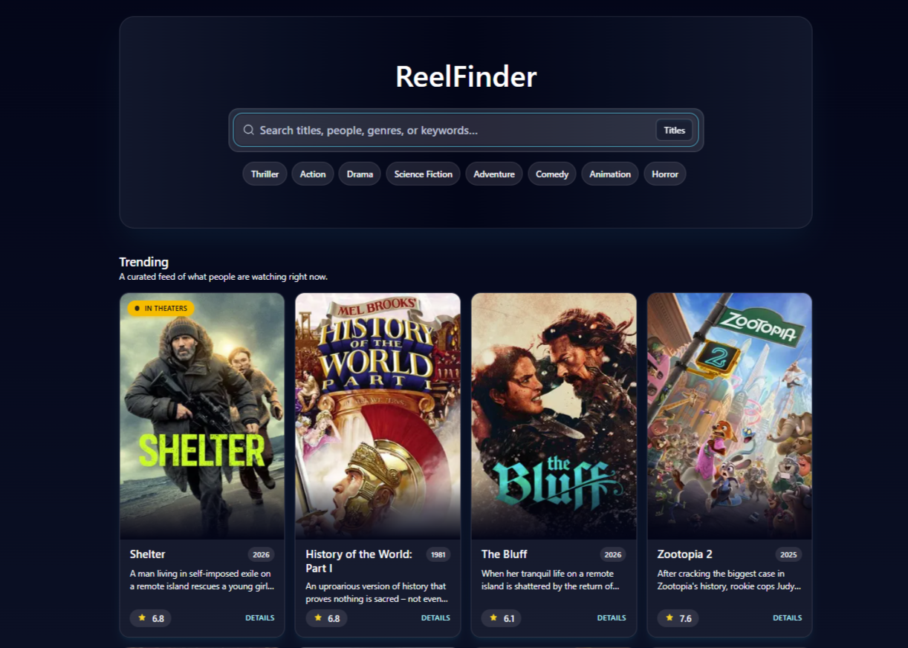

01
ReelFinder
A movie discovery application designed to help users quickly find, explore, and save films they’re interested in watching.
- Search and discover movies by title, genre, or keyword
- View detailed information for each film
- Save favorites for quick access later
- Clean layout optimized for desktop and mobile